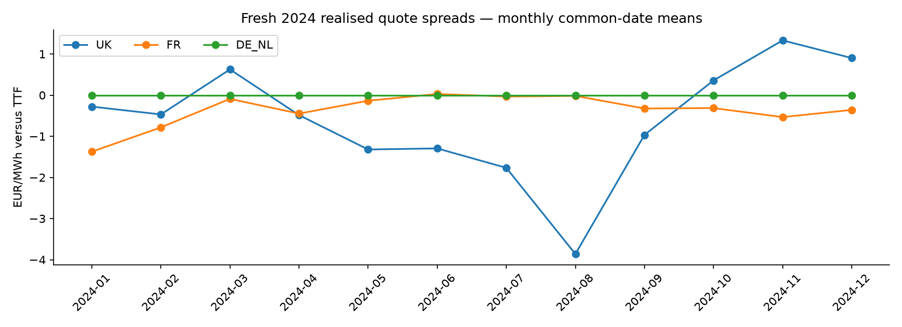
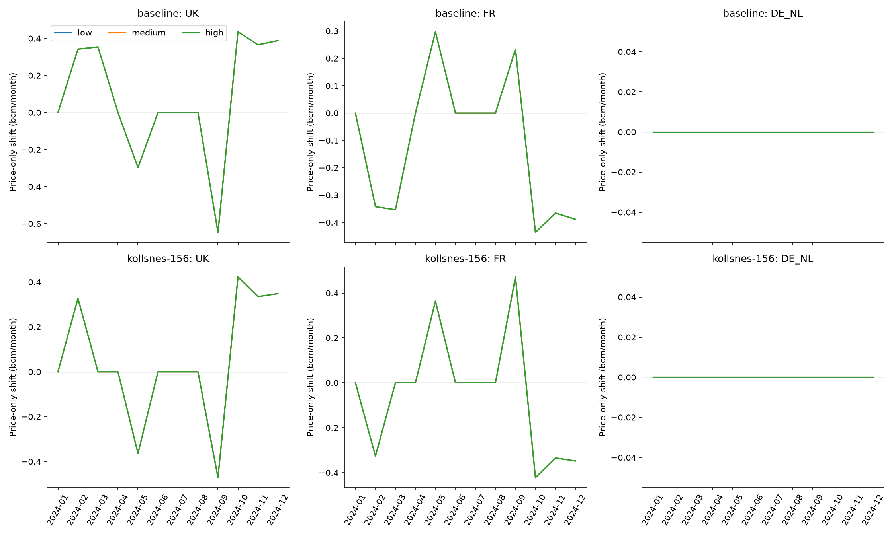
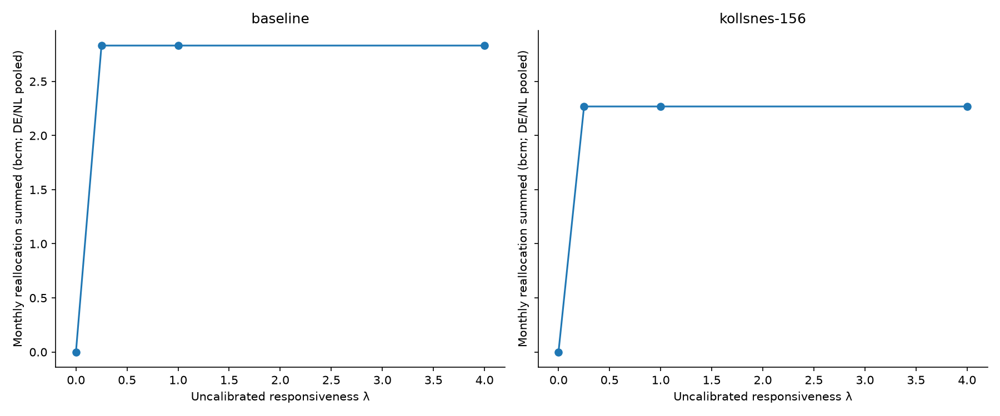
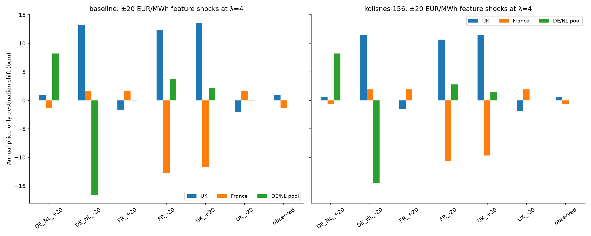
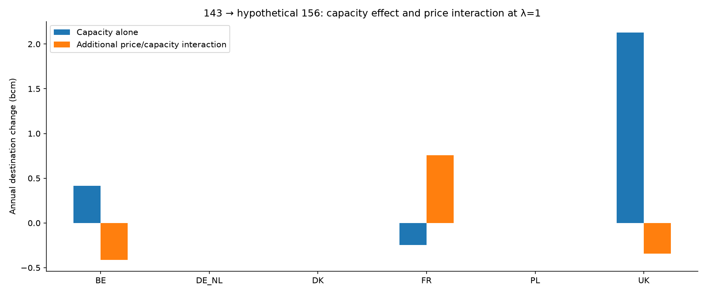

Optional empirical preference experiment: Stage 2 minimises L1 deviation minus λ × spread/10 EUR/MWh × allocated bcm. This is not revenue or a netback. Strengths 0, 0.25, 1 and 4 are illustrative, not calibrated. TTF represents the whole DE/NL pool; BE/DK/PL have zero price coefficients but may move indirectly. Fresh realised quote-date means do not represent delivery volume weights or information available before the month. Kollsnes 156 remains hypothetical. Stage 1 maximum exports and the combined Stage 2 optimum are preserved. No 2025/2026 scoring or default model activation occurred. Any positive weight can resolve old L1 ties, so a jump from zero is expected; response need not scale smoothly with λ. Within-DE/NL changes are not separately price-identified. Grouped reallocation removes that internal-pool contribution; seven-country shifts remain available in CSVs.
| capacity | responsiveness_label | exports_bcm | priced_pool_reallocation_bcm | UK_price_delta_bcm | FR_price_delta_bcm | DE_NL_price_delta_bcm |
|---|---|---|---|---|---|---|
| baseline | zero | 117.083134 | 0.000000 | 0.000000 | 0.000000 | 0.000000 |
| baseline | low | 117.083134 | 2.831536 | 0.942437 | -1.355652 | 0.000000 |
| baseline | medium | 117.083134 | 2.831536 | 0.942437 | -1.355652 | 0.000000 |
| baseline | high | 117.083134 | 2.831536 | 0.942437 | -1.355652 | 0.000000 |
| kollsnes-156 | zero | 119.377524 | 0.000000 | 0.000000 | 0.000000 | 0.000000 |
| kollsnes-156 | low | 119.377524 | 2.268630 | 0.597724 | -0.597724 | 0.000000 |
| kollsnes-156 | medium | 119.377524 | 2.268630 | 0.597724 | -0.597724 | 0.000000 |
| kollsnes-156 | high | 119.377524 | 2.268630 | 0.597724 | -0.597724 | 0.000000 |




